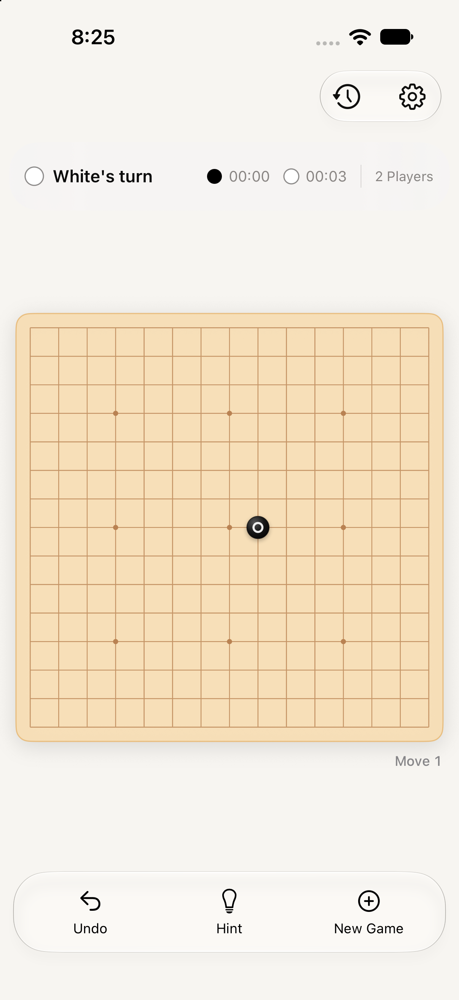
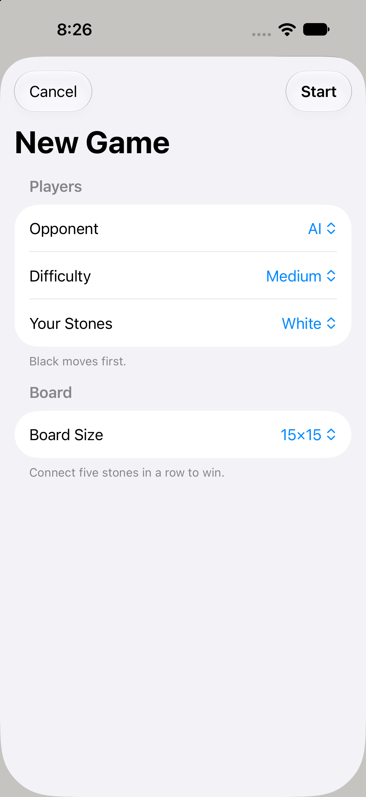
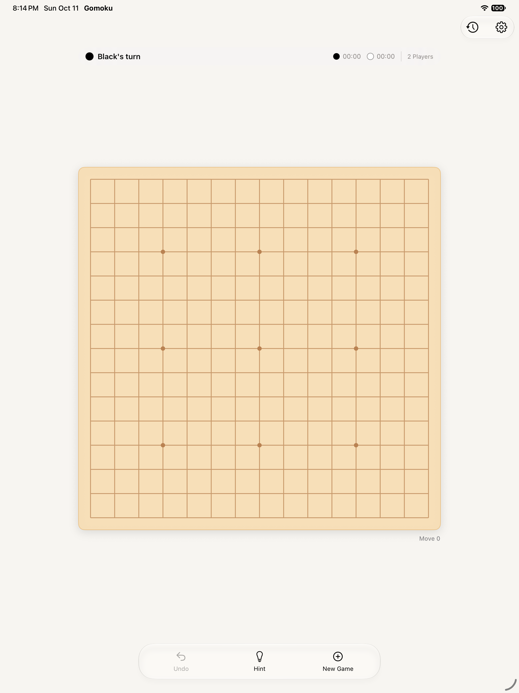
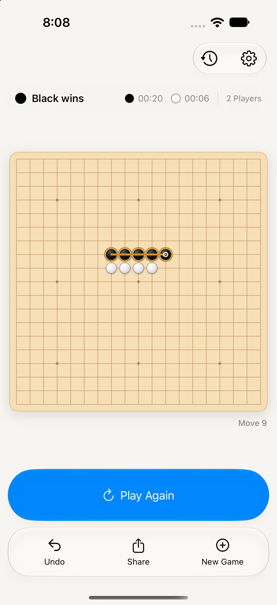
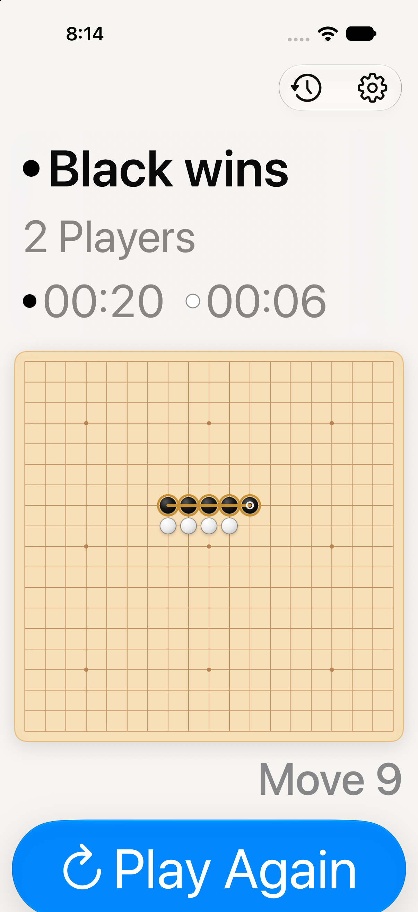
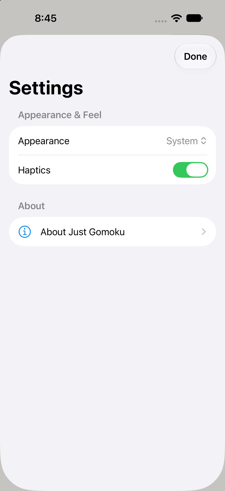
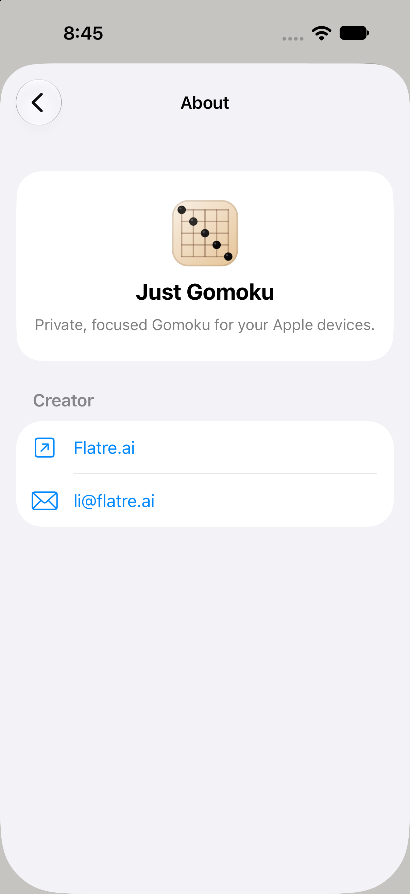
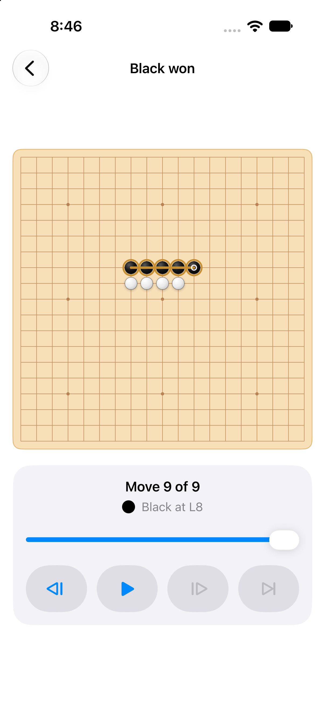
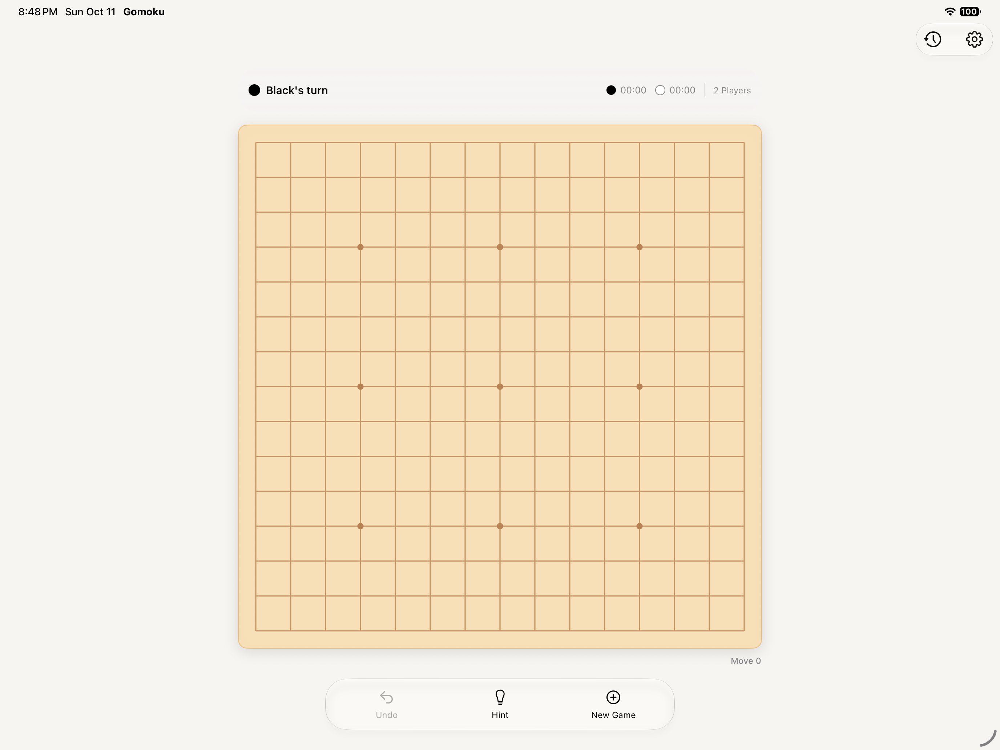

Just Gomoku — polished UI
The warm board and simple controls remain. Setup is consolidated, the game adapts to larger text, and iPad uses one clear composition.

Gameplay
One status row, quieter clocks, and the familiar warm board.
View full-size screenshot
New Game
Opponent, difficulty, stones, and board size live in one native sheet with an explicit Start action.
View full-size screenshot
iPad
A single game layout and shared action dock replace the duplicate inspector.
View full-size screenshot
Finished game
Play Again is prominent; Share remains available in the action dock.
View full-size screenshot
Larger text
Status and clocks stack above the board. The screen scrolls to keep the remaining actions reachable.
View full-size screenshot
Settings
Only appearance, haptics, and About remain in Settings.
View full-size screenshot
About
A simple information screen opens within Settings, with familiar back navigation.
View full-size screenshot
Replay
Larger transport controls and clear player/coordinate context accompany each move.
View full-size screenshot
iPad landscape
The same focused game structure adapts to landscape without a second inspector.
View full-size screenshotVerification: 17 unit tests and four UI tests passed across the final focused runs. The UI checks covered the largest text size, draft cancellation, AI startup, conditional Custom controls, tap placement, held dragging, scroll gestures, and accessibility. iOS and macOS builds succeeded. Settings/About navigation and replay were also checked in Simulator.
These are captures of the native app in iPhone and iPad simulators. This page is a static screenshot gallery; tap an image to inspect the full capture.